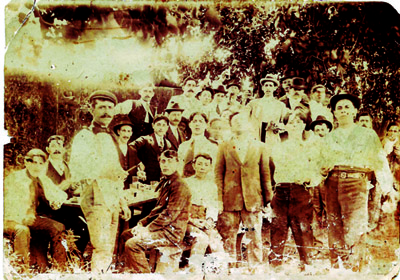

El 13 de abril de 1907 un grupo de amigos que habían dejado el Santa Fe Football Club, buscaban un nuevo club. Tras concluir que ningún club los albergaría a todos juntos, el 15 de abril de 1907, un grupo de 14 amigos y socios liderados por Belisario Osuna decidieron crear una nueva institución, a partir de los lazos de amistad y camaradería que unían a aquel grupo entusiasta de muchachos y así nació el Club.
Los fundadores del Club Atlético Unión
Belisario Osuna, Antonio Baragiola, Néstor Casabianca, Enrique y José Fayó, Pedro Gibella, Secundino Noceda, Federico Achenbach, José Cepeda, Guillermo Drenner -quien fuera el primer presidente de la entidad-, Cayetano Bossi, José Trentini, Primo Billordo y Guillermo Scartascini, fueron los catorce hombres que dieron origen a la institución rojiblanca.
El nombre elegido sería, Club United desde abril hasta julio de 1907 por idea del socio fundador Cayetano Bossi que significaba unidos en inglés, desde el julio de 1907 hasta el diciembre de 1912 pasó a llamarse Unión Foot-ball Club nombre propuesto por Antonio Baragiola, luego se castellanizó el nombre a Club Atlético Unión.
Por su ubicación geográfica en la ciudad, en la intersección de Bv. Pellegrini y Av. López y Planes, se lo conoce como el «Club de la Avenida». Los colores del club son el rojo y el blanco a bastones verticales.
Su disciplina principal es el fútbol masculino profesional, donde milita actualmente en la Liga Profesional primera división del fútbol argentino, pero también se practican otras disciplinas como básquet, arquería, patín, voleibol, futsal, fútbol femenino, karate, natación con pileta olímpica, gimnasia deportiva.
Actualmente el equipo de básquet participa en la Liga Nacional de Básquet, luego de jugar 8 años en el TNA, el 6 de octubre de 2021 el conjunto rojiblanco volvió a la máxima categoría del básquet en la Argentina.

ESCUDO OFICIAL: 1907
La forma del escudo es de tipo suizo (tres puntas en el jefe). En su interior contiene cinco rayas verticales rojas, y cuatro rayas verticales blancas. El borde del escudo lleva doble festón, y en el interior del escudo se encuentran las iniciales del club, ubicadas de modo oblicuo, centradas, respecto a las tres rayas verticales rojas del centro.
LAS PRIMERAS CAMISETAS DEL TATE: 1907.
Sus colores marcaron la historia desde sus inicios. Rojo y blanco a bastones verticales para homenajear al glorioso Alumni, amo y señor del amateurismo en el fútbol de la República Argentina. Esta decisión se tomó en Asamblea 91 días después de la fundación, el 30 de julio de 1907. Si bien la primer casaca fué blanca con puños negros, los bastones rojo y blanco no tardaron en llegar como simbolo de nuestra identidad.
ESTADIO “15 DE ABRIL”: 1929.
En el lugar donde nació el elenco rojiblanco, solo quedan los cimientos: actualmente existe allí un estacionamiento (donde se encontraba el solar en el cual se fotografiaron los fundadores), a metros de la mítica peatonal santafesina.
El Club Atlético Unión inauguró su nueva cancha de fútbol, en el predio donde actualmente se ubica su sede social, en Avenida López y Planes y Boulevard Pellegrini. Los diarios de la época describieron al nuevo estadio como uno de los más amplios y cómodos del país.
INGRESO AL PROFESIONALISMO: 1940.
El primer partido registrado con imágenes del Club Atlético Unión fue disputado el 21 de julio de 1907, nueve días antes de la decisión de usar la camiseta a rayas coloradas y blancas mediante Asamblea.
Fue el primer club de la ciudad de Santa Fe inscripto en los registros de AFA. La intención de los dirigentes era ingresar directamente al torneo de Primera División, como lo habían hecho otros clubes, pero AFA no lo permitió y Unión debió competir en los viejos y duros torneos de la B.
A lo largo de los años, el club que engloba a la mitad de la ciudad de Santa Fe, comenzó a enarbolar su bandera a través de sus hazañas. Si bien ascendió a Primera División en el año 1966 tras obtener el Campeonato de Primera B; en las décadas anteriores tuvo actuaciones destacadas, con sendos subcampeonatos previos en tiempos donde el campeón era únicamente el conjunto que accedía a disputar la Primera División. El 17 de junio de 1929, goleó al Chelsea de Inglaterra por 5 a 0 en una gira que el conjunto británico realizó en nuestro país. También venció a un combinado de jugadores de Atlético de Madrid y Espanyol de Barcelona por 6 a 5, el 28 de Julio de 1935.
Cinco años después, un 28 de abril de 1940, Unión debuta en el profesionalismo, con una goleada como local por 4 a 2 ante Estudiantes de Caseros, por la 1º fecha del Campeonato de Segunda División.
ETERNO RIVAL
El Club Atlético Unión y el Club Atlético Colón le dan vida futbolística a la ciudad. Sin dudas son parte inobjetable de la identidad de los santafesinos. Y entre las grandes hazañas del conjunto tatengue, se encuentra el conjunto sabalero como su víctima. En 1932 Unión venció a Colón en lo que fue una goleada histórica por 6 a 0, en un partido de la Liga Santafesina. El equipo rojiblanco formó con Lezcano; Pini y Gómez; Chividini, Caffaratti y Monzón; Jara, Gómez, Delfidio Giménez, Galateo y Noé.
La victoria más resonante entre ambos conjuntos, se dio el 22 y 29 de Julio de 1989, por la final del Torneo Octogonal por el segundo ascenso a la Primera División. Echaniz, Altamirano, y el propio Leonardo Carol Madelón, le dieron sendas victorias en ambas canchas, y dejaron a Unión nuevamente en Primera División, ante los propios ojos de su más acérrimo rival. Todo Santa Fe lo recuerda, pero solo el Club Atlético Unión lo celebra.